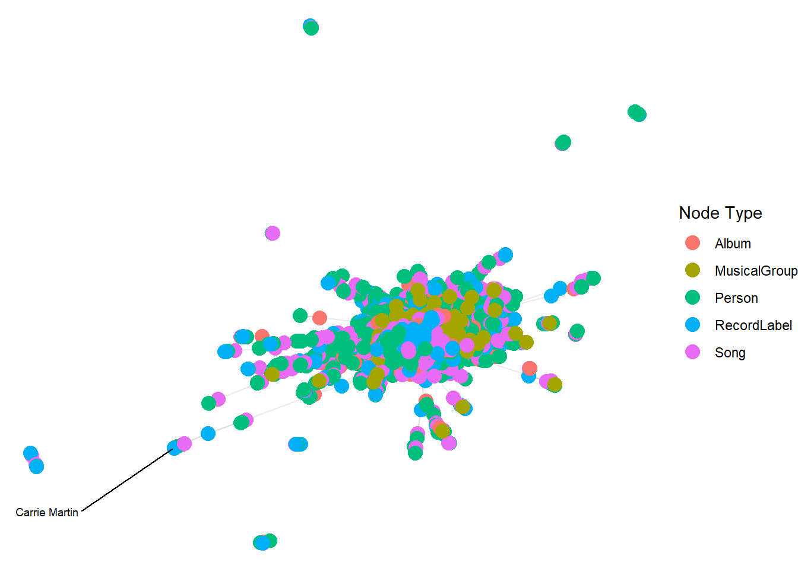
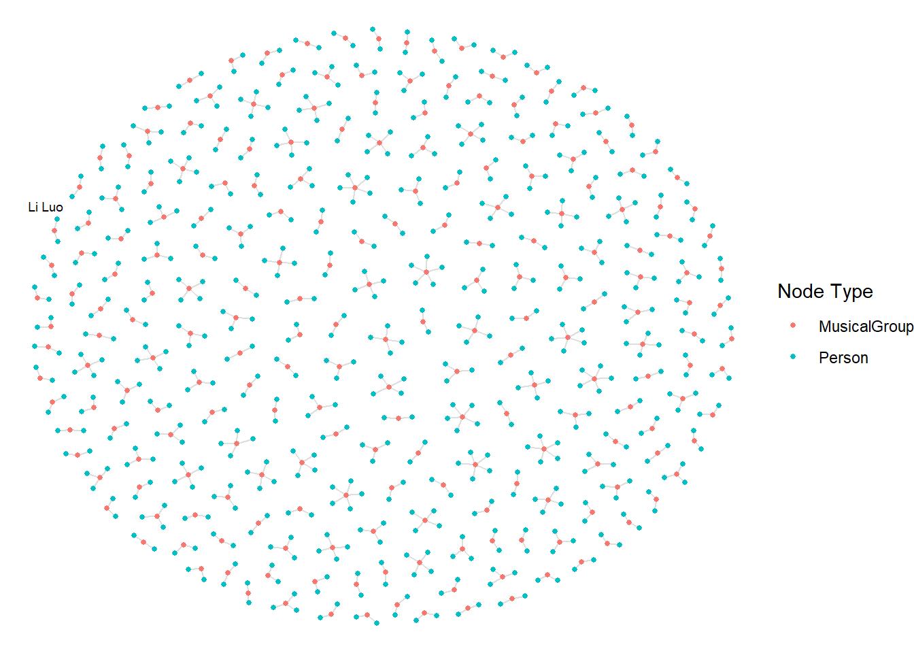

Code
pacman::p_load(tidyverse, jsonlite, SmartEDA, tidygraph, ggraph)pacman::p_load(tidyverse, jsonlite, SmartEDA, tidygraph, ggraph)In the code below, ‘fromJSON()’ of jsonlite package is used to import MC1_graph.json file into R and save the output object.
kg <- fromJSON("data/MC1_graph.json")str(kg, max.level = 1)List of 5
$ directed : logi TRUE
$ multigraph: logi TRUE
$ graph :List of 2
$ nodes :'data.frame': 17412 obs. of 10 variables:
$ links :'data.frame': 37857 obs. of 4 variables:nodes_tbl <- as_tibble(kg$nodes)
edges_tbl <- as_tibble(kg$links)ggplot(data = edges_tbl,
aes(y = `Edge Type`)) +
geom_bar()
id_map <- tibble(id = nodes_tbl$id,
index = seq_len(
nrow(nodes_tbl)))This ensures each id from your node list is mapped to the correct row number.
edges_tbl <- edges_tbl %>%
left_join(id_map, by = c("source" = "id")) %>%
rename(from = index) %>%
left_join(id_map, by = c("target" = "id")) %>%
rename(to = index)edges_tbl <- edges_tbl %>%
filter(!is.na(from),!is.na(to))graph <- tbl_graph(nodes = nodes_tbl,
edges = edges_tbl,
directed = kg$directed)set.seed(1234)#| eval: false
ggraph(graph,layout = "fr") +
geom_edge_link(alpha = 0.3,
colour = "gray") +
geom_node_point(aes(color = `Node Type`),
size = 4) +
geom_node_text(aes(label = name),
repel = TRUE,
size = 2.5) +
theme_void()Warning: ggrepel: 17411 unlabeled data points (too many overlaps). Consider
increasing max.overlaps
graph_memberof <- graph %>%
activate(edges) %>%
filter(`Edge Type` == "MemberOf")used_node_indices <- graph_memberof %>%
activate(edges) %>%
as_tibble() %>%
select(from, to) %>%
unlist() %>%
uniquegraph_memberof <- graph_memberof %>%
activate(nodes) %>%
mutate(row_id = row_number()) %>%
filter(row_id %in% used_node_indices) %>%
select(-row_id) #optional cleanupggraph(graph_memberof,
layout = "fr") +
geom_edge_link(alpha = 0.5,
colour = "gray") +
geom_node_point(aes(color = `Node Type`),
size = 1) +
geom_node_text(aes(label = name),
repel = TRUE,
size = 2.5) +
theme_void()Warning: ggrepel: 790 unlabeled data points (too many overlaps). Consider
increasing max.overlaps